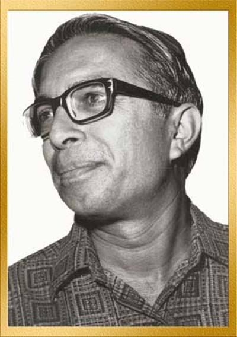

शरद जोशी (21 मई 1931, उज्जैन - 5 सितंबर 1991, मुंबई) अपने समय के अनूठे व्यंग्य रचनाकार थे। अपने वक्त की सामाजिक, राजनीतिक और सांस्कृतिक विसंगतियों को उन्होंने अत्यंत पैनी निगाह से देखा। अपनी पैनी कलम से बड़ी साफगोई के साथ उन्हें सटीक शब्दों में व्यक्त किया। शरद जोशी पहले व्यंग्य नहीं लिखते थे, लेकिन बाद में उन्होंने अपनी आलोचना से खिन्न होकर व्यंग्य लिखना शुरू कर दिया। वह भारत के पहले व्यंग्यकार थे, जिन्होंने पहली बार मुंबई में ‘चकल्लस’ के मंच पर 1968 में गद्य पढ़ा और किसी कवि से अधिक लोकप्रिय हुए।
| रचना का नाम | रचना का प्रकार |
|---|---|
| जीप पर सवार इल्लियाँ | व्यंग्य |